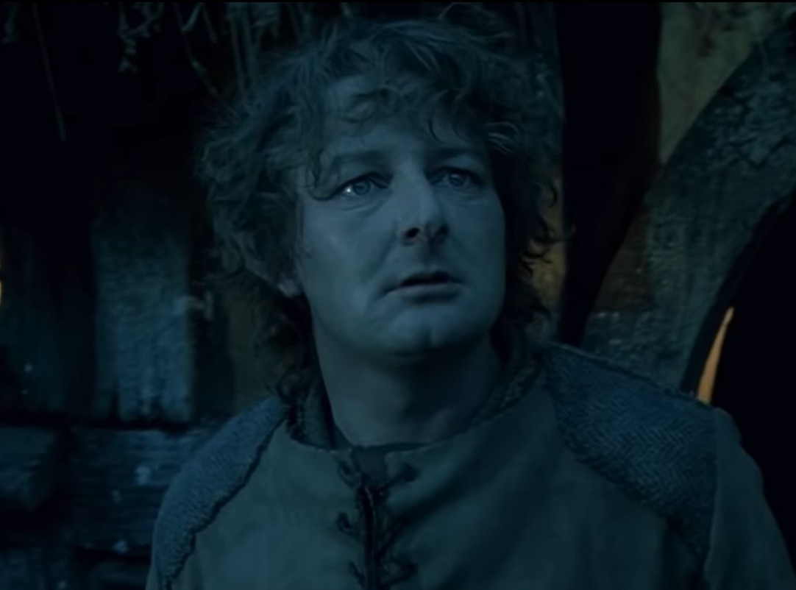
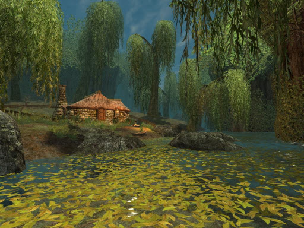
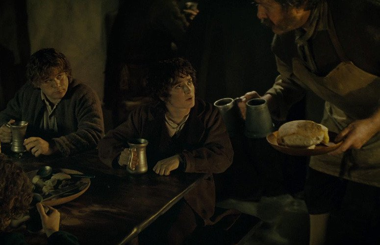

Han pasado sesenta años desde que Bilbo Bolsón, el héroe de El Hobbit, había vuelto de su viaje. En Hobbiton se le conoce gracias a su legendaria riqueza y al hecho de que la edad no parece afectarlo.
Bilbo está apunto de batir una marca récord de edad: 111 años. Por ello anuncia una gran celebración en su honor y en el de su sobrino Frodo, que cumple 33 años el mismo día. Frodo había sido adoptado hace algunos años como heredero y Bilbo le trajo para vivir con él en Bolsón Cerrado.
La fiesta es un éxito. Acuden a ella un gran número de hobbits; pero Bilbo se ha sentido extraño últimamente, y ha decidido tomarse unas vacaciones lejos de la Comarca. Así, después de pronunciar un discurso de sobremesa delante de 144 invitados entre los amigos más íntimos de Frodo y sus parientes, Bilbo se pone su anillo mágico y desaparece causando gran sorpresa.
Habla una última vez con Gandalf antes de partir, y casi cambia su intención de dejar el anillo a Frodo; pero Gandalf lo persuade de su idea, y Bilbo parte, dejando mucho atrás pero más feliz que en toda su vida. Frodo hereda el anillo, y Gandalf le advierte de no usarlo.
Al día siguiente Frodo está ocupado dando los regalos que Bilbo había dejado para los hobbits, y una muchedumbre de personas rodea la casa, muchos de ellos excavando alrededor y buscando los tesoros imaginarios de Bilbo. Gandalf marcha, y no volverá en mucho tiempo.
Gandalf visita a Frodo algunas veces en los años siguientes. Frodo se acostumbra a ser el amo de Bolsón Cerrado, y se hace amigo de algunos de los hobbits mas jóvenes, como Peregrin Tuk y Merry Brandigamo. La mayoría lo consideran raro, tal y como pensaban de su tío Bilbo.
Empiezan a correr rumores de extraños sucesos fuera de la Comarca, como el de la restauración del Poder Oscuro en la Tierra de Mordor, aunque la mayoría de los hobbits no los creen todavía. En el quincuagésimo año de Frodo, Gandalf lo visita de nuevo y tienen una larga charla acerca del anillo que Frodo había heredado de Bilbo.
Gandalf le habla a Frodo sobre la naturaleza y la historia del anillo que realmente es el más grande de los Anillos de Poder y fue creado hace tiempo por Sauron, el Señor Oscuro de Mordor. Sauron está buscándolo ahora ávidamente, y si lo encuentra, su poder crecería inmensamente. El Anillo debe destruirse para que Sauron no pueda encontrarlo; pero sólo puede destruirse en las llamas del Orodruin, el Monte del Destino en Mordor.
Parece que Sauron ya había oído hablar de Bilbo y de la Comarca gracias a Gollum, así que ahora la Comarca probablemente ya no fuera un lugar seguro para Frodo. Este decide salir para destruir el Anillo, acompañado por el joven Sam Gamyi, su jardinero, que al contrario que la mayoría de los hobbits, cree en los viejos cuentos y le encantaría ver a los magníficos Elfos.
Frodo vende Bolsón Cerrado a los Sacovilla-Bolsón y compra una casa en Los Gamos, al este de La Comarca, donde había pasado su juventud, para evitar sospechas del motivo de su marcha. En su quincuagésimo cumpleaños parte de Bolsón Cerrado junto con sus amigos Pippin (Peregrin Tuk) y Sam Gamyi. Gandalf se había marchado durante un tiempo en busca de noticias, pero no había vuelto todavía, lo que preocupaba a Frodo.
Al día siguiente descubren que los misteriosos Jinetes Negros les están siguiendo. Sin saber qué son exactamente, Frodo, muy cuidadoso, decide no dejarse ver por estos Jinetes. Andando por la tarde se encuentran con un grupo errante de elfos cuyo jefe es Gildor Inglorion.
Frodo habla durante mucho tiempo con Gildor, y este le aconseja que intente llegar a Rivendel a pesar de la ausencia de Gandalf, y le dice que los Jinetes Negros son sirvientes peligrosos del Enemigo.
Al día siguiente Frodo decide tomar un atajo hacia el río Brandivino, donde Merry se suponía que les esperaba ese día. Atajaron para llegar allí más pronto, y para evitar ser vistos de nuevo por los Jinetes Negros. De camino, sienten que alguien se acerca y uno de los Jinetes aparece en el camino segundos después de dejarlo.
Después de un viaje largo y desagradable a través de los bosques, alcanzan la propiedad del Granjero Maggot que es conocido por azuzar a sus perros a cualquier intruso que intente coger sus hongos, como el propio Frodo había experimentado en su juventud.
Por suerte Maggot les recibe de buena gana, sobre todo cuando descubre a Pippin, amigo suyo. Maggot les dice que un jinete negro extraño y aterrador le hizo preguntas por un tal Bolsón por la mañana. Maggot les acoge en su casa y por la mañana temprano les lleva en carreta hasta el punto donde habían quedado con Merry.
En cuanto cruzan el río, sienten la presencia de una figura negra que está de pie en el muelle desde el que habían salido. Los hobbits se dirigen a la nueva casa de Frodo en Cricava, y hablan sobre sus aventuras en el viaje. Frodo piensa decirles finalmente a sus amigos que va a salir lo más pronto posible, cuando le dicen que ya saben lo del Anillo y el propósito de su viaje, y que ellos piensan acompañarlo y ayudarlo.
Después del susto inicial, Frodo acepta su ayuda alegremente y deciden partir al día siguiente temprano a través del Bosque Viejo, un lugar raro y peligroso, evitando así los caminos que probablemente estén vigilados por los Jinetes.
Los hobbits entran en el Bosque Viejo y pronto empiezan a sentir su rareza, como si los árboles estuvieran vigilándolos y los odiaran. Alcanzan el Claro de la Hoguera, donde los hobbits quemaron muchos árboles hace tiempo. De allí, siguen un camino que los lleva a una colina que sube fuera del Bosque, y desde allí hacia el río Tornasauce, la parte central y más extraña del bosque. Quieren evitarlo y dejar el camino, pero el terreno siempre es más difícil en la dirección que les gustaría ir.
Más tarde llegan al río Tornasauce y encuentran un camino que corre paralelo a su cauce. Este camino los lleva al Viejo Hombre-Sauce donde empiezan a sentirse somnolientos de repente. Frodo, Merry y Pippin se duermen, y el árbol tira a Frodo al agua y captura a Merry y Pippin bajo sus raíces. Sam y Frodo no pueden rescatarlos, y corren por el camino gritando auxilio.
Se encuentran con Tom Bombadil, un hombre extraño que canta canciones sin sentido. Tom canta la melodía correcta, y el Hombre-Sauce permite salir a Merry y a Pippin; entonces Tom invita a los hobbits a su casa, donde vive con Baya de Oro, la Hija del Río.
Después de tomar una cena magnífica, se van a dormir, y cada uno de ellos tiene sueños diferentes y extraños. Al día siguiente llueve mucho, es el día del lavado de Baya de Oro, y los hobbits hablan con Tom durante todo el día. Tom les habla sobre el Bosque, sobre los árboles y los animales, el viejo Hombre-Sauce, las Quebradas, y la historia antigua; porque él es el Antiguo, el Amo que ya estaba allí en los Días Antiguos en la Primavera de Arda, antes de que los Elfos hubieran despertado. Luego hablan sobre la Comarca, y del viaje de los cuatro hobbits. Durante la conversación, Tom se pone el Anillo y para asombro de los hobbits, descubren que no tiene poder sobre él. Tom les da consejo al día siguiente, y les enseña una rima para llamarlo si necesitan su ayuda.
Los hobbits dejan la casa de Tom y piensan cruzar las Quebradas. Las Quebradas de los Túmlos son una zona montañosa llena de túmulos antiguos con leyendas terribles. Adelantan bastante por la mañana, y al mediodía se detienen para descansar al lado de una gran piedra extrañamente fría que está de pie en la cima llana de una colina.
Se quedan dormidos y se despiertan a la puesta del sol rodeados por niebla. Están desorientados y marchan en una dirección que creen que es la correcta hacia el Camino. Frodo descubre que se han equivocado y cuando mira para atrás oye los gritos de sus compañeros y ve que han desaparecido. Intenta seguir el sonido pero es capturado por un tumulario.
Entonces despierta dentro de un túmulo, y descubre que sus amigos están dormidos mientras una mano esta arrastrándose hacia ellos. Frodo canta la rima que Tom Bombadil les había enseñado el día antes, y Tom irrumpe en el túmulo dejando entrar la luz del día.
Tom despierta a los otros tres hobbits, y da a cada uno una espada de entre los tesoros que había dentro del túmulo. También les trae sus potros que habían huido por la noche; y los acompaña hasta las fronteras de su tierra. Los hobbits continúan, y alcanzan el pueblo de Bree por la tarde.
Los hobbits entran en El Poney Pisador, una gran posada de Bree. Esta es una posada donde acuden los viajeros en busca de una habitación o para tomar algún trago. En ella pueden encontrarse a los hobbits y hombres del lugar, enanos del camino, los extraños hombres del Sur, y un misterioso montaraz conocido como Trancos.
Después de la cena, Frodo, Sam y Pippin deciden charlar con los allí presentes, mientras Merry se marcha a tomar el aire. Pippin llama la atención contando una historia sobre el Alcalde de la Comarca, y ya animado por la gente empieza a contar la fiesta de la despedida de Bilbo.
Frodo no quiere mencionar la desaparición de Bilbo, y para interrumpir a Pippin, salta en una mesa y empieza a cantar y bailar. Salta y se cae de la mesa, y mientras se cae, el Anillo se resbala en su dedo y desaparece. Esto causa mucha desconfianza y a pesar de sus explicaciones de haberse arrastrado bajo la mesa hasta el rincón donde estaba Trancos, la mayoría de la clientela se marcha asustada.
Trancos parece saber su nombre real y la verdadera causa de su desaparición y le pide que tengan una charla. Cebadilla Mantecona, el posadero, también recuerda algo y le pide una conversación privada a Frodo.
Trancos habla con Frodo, Sam y Pippin. Este se ofrece para ser su guía, y además parece saber mucho de Frodo; sin embargo, debido a su apariencia, los hobbits no confian en él. Entonces Mantecona llega y explica que Gandalf dejó hace varios meses una carta para un tal Frodo Bolsón que Mantecona olvidó enviar a la Comarca. Los hobbits parecen encajar con la descripción que Gandalf dio a Mantecona, y este le da la carta a Frodo.
Entre otras cosas, en esta carta Gandalf aconseja que acepten la ayuda de un amigo suyo, un hombre llamado Trancos, cuyo verdadero nombre es Aragorn. Así Frodo decide aceptar su ayuda como guía a Rivendel. Merry, que estaba fuera, entra en la habitación y dice que ha visto a los Jinetes Negros, y parece que tienen espías en Bree. Los hobbits deciden no ir a sus cuartos, y duermen todos juntos en otra habitación, después de atrancar ventanas y puertas.
Esa misma noche, los Jinetes Negros irrumpen en la casa de Frodo en Cricava y descubren que no está allí. Enseguida se dirigen a Bree a gran velocidad. Irrumpen en la posada, o más específicamente en el cuarto especialmente habilitado para hobbits viajeros. Así los hobbits se salvan, pero todos los caballos y los potros de la posada escapan aterrorizados.
Al día siguiente compran un potro y suministros de comida. Se dirigen a Rivendel, y Trancos los lleva a través de los pantanos de Moscagua hasta la Colina de los Vientos que ofrece una vista privilegiada. Parece que Gandalf había estado allí tres días antes que ellos.
Esa tarde son atacados por cinco de los Jinetes en una cañada debajo de la Colina de los Vientos. Frodo no puede resistirse al deseo de ponerse el Anillo, e inmediatamente después de hacerlo, comprende que le pueden ver los Jinetes muy claramente a pesar de la oscuridad. El capitán de los Jinetes ataca a Frodo que lanza un golpe a los pies del Jinete; pero este le clava el Cuchillo de Morgul en el hombro izquierdo y se desmaya inmediatamente después.
Trancos hace lo que puede para curar a Frodo, pero sólo puede recibir un tratamiento apropiado en Rivendel. Cruzan el río Fontegrís, y para evitar el camino, atraviesan una zona montañosa e incluso alcanzan la región de los trolls donde Bilbo había experimentado su primera aventura hace tantos años.
Tienen que cruzar una cordillera de colinas para acercarse de nuevo al camino, ya que su única esperanza de llegar a tiempo a Rivendel es seguir el camino que cruza el río Bruinen: deben llegar al Vado del Bruinen. En el camino se encuentran con Glorfindel, un Señor elfo que ha sido enviado desde Rivendel para encontrarlos y ayudarlos.
Cerca del Vado del Bruinen, son emboscados por los Jinetes Negros, cinco que los siguen por detrás y cuatro que esperan en el Vado. Frodo consigue escapar de ellos y cruzar el río en el caballo de Glorfindel. Entonces una gran avalancha de agua viene río abajo arrastrando a los Jinetes lejos de allí.
Continúa en Las dos torres...